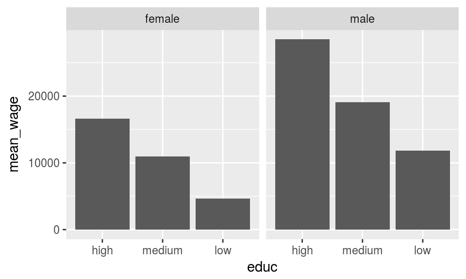

tidymetadata
2017-05-16
Using tidymetadata-package with Luxembourdg Income Study data
Install the package with
devtools::install_github("muuankarski/tidymetadata")Tidymetadata-package provides a technical backbone for tidy metadata logic to work with social survey data using tidyverse tools.
If not familiar with tidy data or tidyverse, please familiarise yourself with:
- Wickham, Hadley. 2014. ‘Tidy Data’. Journal of Statistical Software 59 (10). doi:10.18637/jss.v059.i10.
- R for Data Science: Tidy Data
- http://tidyverse.org/
Tidymetadata is not replacement for dedicated packages to work with survey data in general such as survey, but it complements them by providing a framework to deal with the labelled structure typical for social survey data. Such structure is not optimal to work with in R and tidyverse. Basically, tidymetadata provides functions to separate the data and metadata from labelled data.frame imported in R with haven and how to put it back together. This approach comes especially handy when building shiny-applications on top of such data. Try first running the shiny-app wrapped with the package with tidymetadata::runExample().
Download SPSS, Stata and SAS training data from Luxembourg Income Study
Survey datas are in most cases still disseminated in either SAS, SPSS or Stata formats with metadata included in variable and value labels. We first download the demo files freely available at from Luxembourg Income Study.
library(tidyverse)
if (!file.exists("./datasets/data.sav")){
dir.create("./datasets")
# SPSS-file
download.file("http://www.lisdatacenter.org/wp-content/uploads/it04ip.sav", "./datasets/data.sav")
# Stata-file
download.file("http://www.lisdatacenter.org/wp-content/uploads/it04ip.dta", "./datasets/data.dta")
# SAS-file
download.file("http://www.lisdatacenter.org/wp-content/uploads/it04ip.sas7bdat", "./datasets/data.sas7bdat")
}Package haven provides handy functions for reading in such formats
library(haven)
spss <- read_sav("./datasets/data.sav")
stata <- read_dta("./datasets/data.dta")
sas <- read_sas("./datasets/data.sas7bdat")They all have the same number of cases and variables, and seem to share similar structure with variable labels and value labels as attributes. However, when applying str() function for all three datas we can spot that imported spss and stata files seem to have identical structure and somewhat richer than sas file has.
Create “tidy metadata”
Once we have datafiles in R, we use function tidymetadata::create_meta() to create tidy metadata. tidymetadata::create_meta() extracts the metadata information from variable attributes and creates a tidy data frame with columns:
-
codefor variable code -
namefor variable name -
valuefor each value for each labelled variable -
labelfor each value label for each labelled variable -
classfor wheter the variable in question isfactor,numericorcharacter
As for rows, tidy metadata has a single row for a unique numeric or character type of variable. Such variables are not labelled ie. have no additional information within the object. As for factor variables, tidy metadata has one row per one value ie. factor level. For instance, two class gender variable would have two rows in tidy metadata, one for both values.
Lets apply the tidymetadata::create_meta()-function for each data:
library(tidymetadata)
meta_spss <- create_metadata(spss)
meta_stata <- create_metadata(stata)
meta_sas <- create_metadata(sas)And, lets subset each data into variable sex and pile up the resulting rows:
meta_spss$type ="spss"
meta_stata$type ="stata"
meta_sas$type ="sas"
bind_rows(
meta_spss[meta_spss$code == "sex",],
meta_stata[meta_stata$code == "sex",],
meta_sas[meta_sas$code == "sex",]
) %>%
knitr::kable()| code | name | label | value | class | type |
|---|---|---|---|---|---|
| sex | gender | [1]male | 1 | factor | spss |
| sex | gender | [2]female | 2 | factor | spss |
| sex | gender | [1]male | 1 | factor | stata |
| sex | gender | [2]female | 2 | factor | stata |
| sex | gender | NA | NA | numeric | sas |
We can see that SPSS and Stata files produce identical metadatas for variable sex, but SAS file is lacking the value label information. For this reason we should work only using either Stata or SPSS files in this case, and for this particular vignette we will choose the SPSS file.
Stripping data from attributes
Once we have extracted the metadata information from the labelled data, we can strip off this information and leave only the bare data with numeric/character content in the variables using tidymetadata::strip_attributes() function with no attributes whatsoever.
Before stripping the attributes we get:
str(spss[,1:10])## Classes 'tbl_df', 'tbl' and 'data.frame': 1358 obs. of 10 variables:
## $ hid : atomic 1 1 2 2 2 2 3 4 4 4 ...
## ..- attr(*, "label")= chr "unique unit identifier"
## ..- attr(*, "format.spss")= chr "F9.0"
## $ pid : atomic 1 2 1 2 3 4 1 1 2 3 ...
## ..- attr(*, "label")= chr "person identifier"
## ..- attr(*, "format.spss")= chr "F8.0"
## $ did : atomic 198 198 198 198 198 198 198 198 198 198 ...
## ..- attr(*, "label")= chr "unique country/year number"
## ..- attr(*, "format.spss")= chr "F8.0"
## $ dname : atomic it04 it04 it04 it04 ...
## ..- attr(*, "label")= chr "country/year identifier"
## ..- attr(*, "format.spss")= chr "A4"
## $ cname : atomic Italy Italy Italy Italy ...
## ..- attr(*, "label")= chr "country name"
## ..- attr(*, "format.spss")= chr "A5"
## $ iso2 : atomic it it it it ...
## ..- attr(*, "label")= chr "2-letter country abbreviation"
## ..- attr(*, "format.spss")= chr "A2"
## $ year : atomic 2004 2004 2004 2004 2004 ...
## ..- attr(*, "label")= chr "reference year"
## ..- attr(*, "format.spss")= chr "F8.0"
## $ wave :Class 'labelled' atomic [1:1358] 6 6 6 6 6 6 6 6 6 6 ...
## .. ..- attr(*, "label")= chr "data wave"
## .. ..- attr(*, "format.spss")= chr "F18.0"
## .. ..- attr(*, "labels")= Named num [1:10] 0 1 2 3 4 5 6 7 8 9
## .. .. ..- attr(*, "names")= chr [1:10] "[0]Historical Wave" "[1]Wave I" "[2]Wave II" "[3]Wave III" ...
## $ pwgt : atomic 3.7 3.7 8.9 8.9 8.9 ...
## ..- attr(*, "label")= chr "person weight (normalised)"
## ..- attr(*, "format.spss")= chr "F8.2"
## $ ppopwgt: atomic 21820 21820 52526 52526 52526 ...
## ..- attr(*, "label")= chr "person weight (inflated)"
## ..- attr(*, "format.spss")= chr "F8.2"And after removing attributes the output for same columns is:
# remove_attributes
data_spss <- tidymetadata::strip_attributes(spss)
str(data_spss[,1:10])## Classes 'tbl_df', 'tbl' and 'data.frame': 1358 obs. of 10 variables:
## $ hid : num 1 1 2 2 2 2 3 4 4 4 ...
## $ pid : num 1 2 1 2 3 4 1 1 2 3 ...
## $ did : num 198 198 198 198 198 198 198 198 198 198 ...
## $ dname : chr "it04" "it04" "it04" "it04" ...
## $ cname : chr "Italy" "Italy" "Italy" "Italy" ...
## $ iso2 : chr "it" "it" "it" "it" ...
## $ year : num 2004 2004 2004 2004 2004 ...
## $ wave : num 6 6 6 6 6 6 6 6 6 6 ...
## $ pwgt : num 3.7 3.7 8.9 8.9 8.9 ...
## $ ppopwgt: num 21820 21820 52526 52526 52526 ...So, now we have two tidy datas, data_spss and meta_spss, and we can use whatever methods we need to for analysing data_spss.
Labelling the data
For labelling the data with the meta_spss we can use function tidymwetadata::label_data() that basically uses match() for mapping the numeric values with corresponding value labels. Below we are labeling the variable sex.
data_spss$sex_lab <- tidymetadata::label_data(data_spss,
variable.data ="sex",
variable.meta = "sex",
metadata=meta_spss,
into.factor=FALSE)
head(data_spss[c("sex","sex_lab")])## # A tibble: 6 × 2
## sex sex_lab
## <dbl> <chr>
## 1 1 [1]male
## 2 2 [2]female
## 3 1 [1]male
## 4 2 [2]female
## 5 1 [1]male
## 6 1 [1]maleCase: Personal net hourly wage by sex and education
Lets then do a quick demo on how to use this package with a simple analysis that uses following variables:
-
pmi =
pmi -
gender =
sex -
highest completed education level =
educ
Lets print the metadata out of those variables
# re-creating metadata
spss <- read_sav("./datasets/data.sav")
spss_meta <- create_metadata(spss)
meta_spss[meta_spss$code %in% c("sex","pmi","educ"),] %>%
kable()| code | name | label | value | class | type |
|---|---|---|---|---|---|
| sex | gender | [1]male | 1 | factor | spss |
| sex | gender | [2]female | 2 | factor | spss |
| educ | highest completed education level (3-category recode) | [1]low | 1 | factor | spss |
| educ | highest completed education level (3-category recode) | [2]medium | 2 | factor | spss |
| educ | highest completed education level (3-category recode) | [3]high | 3 | factor | spss |
| educ | highest completed education level (3-category recode) | [9]all else | 9 | factor | spss |
| pmi | total income, person, monetary | NA | NA | numeric | spss |
Note
In this particular data they have added numeric prefixes for each value label to define the order of the levels. As it looks odd in the outputs, lets remove all with some reqular expression
meta_spss$label <- sub("^\\[[0-9]+\\]", "", meta_spss$label)
#
meta_spss[meta_spss$code %in% c("sex","pmi","educ"),] %>%
kable()| code | name | label | value | class | type |
|---|---|---|---|---|---|
| sex | gender | male | 1 | factor | spss |
| sex | gender | female | 2 | factor | spss |
| educ | highest completed education level (3-category recode) | low | 1 | factor | spss |
| educ | highest completed education level (3-category recode) | medium | 2 | factor | spss |
| educ | highest completed education level (3-category recode) | high | 3 | factor | spss |
| educ | highest completed education level (3-category recode) | all else | 9 | factor | spss |
| pmi | total income, person, monetary | NA | NA | numeric | spss |
To get started with the analysis, lets first compute the mean hourly wage for each category using the stripped data.
data_spss %>%
select(cname,sex,educ,pmi) %>%
na.omit() %>%
group_by(cname,sex,educ) %>%
summarise(mean_wage = mean(pmi)) -> d_mean
library(ggplot2)
ggplot(d_mean, aes(x=educ,y=mean_wage)) + geom_col() + facet_wrap(~sex)
Then lets label the variables before plotting it with into.factor=FALSE
data_spss %>%
select(cname,sex,educ,pmi) %>%
na.omit() %>%
group_by(cname,sex,educ) %>%
summarise(mean_wage = mean(pmi)) %>%
ungroup() %>%
mutate(sex = label_data(.,variable.data = "sex", metadata = meta_spss, into.factor=FALSE),
educ = label_data(.,variable.data = "educ", metadata = meta_spss, into.factor=FALSE)) -> d_mean
ggplot(d_mean, aes(x=educ,y=mean_wage)) + geom_col() + facet_wrap(~sex)
With into.factor set as FALSE the value labels are put in place as character ie. without any order. When set TRUE the value labels are forced into factors with same order of value labels as in the original SPSS/Stata files.
data_spss %>%
select(cname,sex,educ,pmi) %>%
na.omit() %>%
group_by(cname,sex,educ) %>%
summarise(mean_wage = mean(pmi)) %>%
ungroup() %>%
mutate(sex = label_data(.,variable.data = "sex", metadata = meta_spss, into.factor=TRUE),
educ = label_data(.,variable.data = "educ", metadata = meta_spss, into.factor=TRUE)) -> d_mean
ggplot(d_mean, aes(x=educ,y=mean_wage)) + geom_col() + facet_wrap(~sex)
Package forcats is useful when you need to do more adjusting for the factors, for instance reversing the order of the factor labels as below.
data_spss %>%
select(cname,sex,educ,pmi) %>%
na.omit() %>%
group_by(cname,sex,educ) %>%
summarise(mean_wage = mean(pmi)) %>%
ungroup() %>%
mutate(sex = label_data(.,variable.data = "sex",
metadata = meta_spss, into.factor=TRUE),
educ = label_data(.,variable.data = "educ",
metadata = meta_spss, into.factor=TRUE)) %>%
mutate(
sex = forcats::fct_rev(sex),
educ = forcats::fct_rev(educ)
) -> d_mean
ggplot(d_mean, aes(x=educ,y=mean_wage)) + geom_col() + facet_wrap(~sex)
Adding new variables
You often need to create new variables when working with social surveys, this is how you would do for age_class
First, lets make sure that variable ´age` is numeric with
meta_spss[meta_spss$code == "age",]$class == "numeric"## [1] TRUEthen classify it into four categories
data_spss$age_class[data_spss$age < 20] <- 1
data_spss$age_class[data_spss$age >= 20 & data_spss$age < 40] <- 2
data_spss$age_class[data_spss$age >= 40 & data_spss$age < 60] <- 3
data_spss$age_class[data_spss$age >= 60] <- 4
as.data.frame(table(data_spss$age_class))## Var1 Freq
## 1 1 190
## 2 2 285
## 3 3 445
## 4 4 438then lets add the new variable into metadata
new_row <- data_frame(
code = "age_class",
name = "age in four classes",
value = 1:4,
label = c("under 25",
"25 to 39",
"40 to 59",
"60 or more"),
class="factor"
)
meta_spss <- bind_rows(meta_spss,new_row)Lets add the age class dimension to our analysis from above
data_spss %>%
select(cname,sex,educ,pmi,age_class) %>%
na.omit() %>%
group_by(cname,sex,educ,age_class) %>%
summarise(mean_wage = mean(pmi)) %>%
ungroup() %>%
mutate(sex = label_data(.,variable.data = "sex", metadata = meta_spss, into.factor=TRUE),
educ = label_data(.,variable.data = "educ", metadata = meta_spss, into.factor=TRUE),
age_class = label_data(.,variable.data = "age_class", metadata = meta_spss, into.factor=TRUE)) -> d_mean
ggplot(d_mean, aes(x=educ,y=mean_wage)) + geom_col() + facet_grid(age_class~sex)
Again, this approach is very useful when working with shiny-applications as pointed out in this example at https://github.com/muuankarski/tidymetadata/tree/master/inst/shiny-examples/lisapp that can be lauched with tidymetadata::runExample()